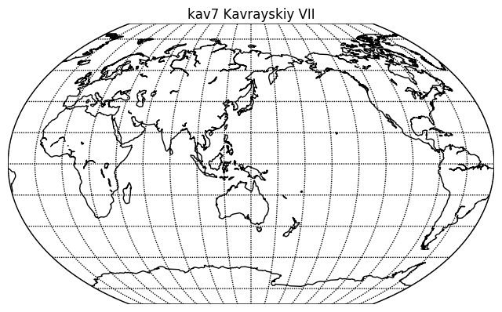

Introduction to my Python Data Analysis Hacking
Introduction
This the first of a set of blogs posts about the experience of learning about the current crop of Python visualization and mapping tools. These tools include:
Mapping tools
- Basemap
- Cartopy
- Geopandas
Visualization tools
- Bokeh
- Seaborn
- ggplot
Data management tools
- pandas
- numpy
Each investigation into a given tool is captured by a Jupyter Notebook, and an HTML version of these will be provided in each blog post.
One point to note is that I am a very happy user on conda / Anaconda, and their curated packages certainly make life very easy, but it does mean that you might not have the latest and greatest version of a package. Always remember to check before banging an issue on the latest version in GitHub.
The first investigation was to display all the map projections that Basemap supports, but with the twist of having the map centred as much as possible on Australia, or to be more precise, near me (longitude 150 East, latitude=24 South). Basemap handled each projection as expected, except:
-
the Polyconic Projection (
poly) did not show the meridians and parallels -
the Rotated Pole (
rotpole) could not be made to display Australia (I guess I didn't understand how the parameters worked and to be fair, I did try to display mots of the globe, whicjh is probably not in the spirit of the projection)
Come from a background of working in Defence projects, one wonders why you wouldn't always use UTM, but I guess that projections (especially of the whole globe) have purposes other that just distortion-free distance measurement. When I was in Sweden, I learned about one of their projections, which was "run a line North-South through the middle of Sweden to give Y, and then measure X as distance from the line". Fair enough, for a very long thin country near the North Pole.
Anyhow, a typical code fragment looks like:
# lon_0 is central longitude of projection.
# resolution = 'c' means use crude resolution coastlines.
my_map = Basemap(projection='kav7',lon_0=140,resolution='c')
my_map.drawcoastlines()
my_map.drawparallels(np.arange(-80.,81.,20.))
my_map.drawmeridians(np.arange(-180.,181.,20 ))
plt.title('kav7 Kavrayskiy VII')
plt.show()
This yields a map that looks like:

As a spoiler alert for a subsequent post, I later discovered that Basemap is not so good at showing polygons and lines that wrap around the latitude 180 East / 180 West line. Sometimes it becomes necessary to have the map display centred on London (latitude 0). One set of Shapefiles I read in (tectonic plate boundaries) in fact split its Polygon shapes into two if they crossed this line. In fact, this is one area where Cartopy shines, even though it has fewer projections than Basemap.
The notebook that has all the code is here